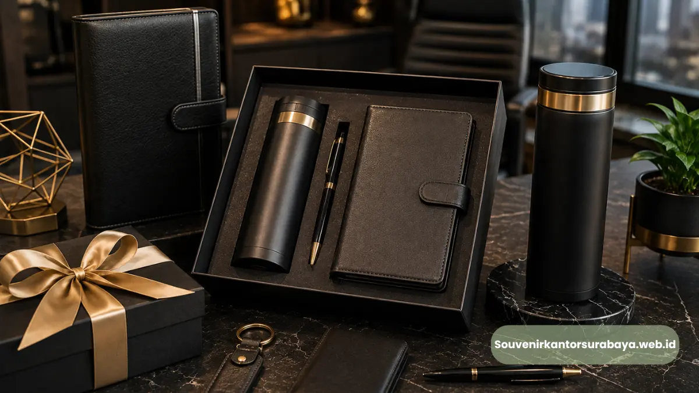

Souvenir kantor custom logo Surabaya untuk memperkuat identitas brand Anda.
Souvenir kantor custom logo Surabaya adalah merchandise korporat yang dicetak khusus dengan logo dan identitas visual perusahaan menggunakan teknik sablon, bordir, ukir laser, atau emboss.
Layanan ini membantu perusahaan menghadirkan kesan profesional yang konsisten pada setiap produk yang dibagikan kepada klien maupun karyawan. Custom logo pada souvenir kantor menjadi salah satu cara paling efektif untuk memperluas eksposur brand secara berkelanjutan.
- Souvenir kantor custom logo memperkuat konsistensi identitas visual perusahaan di setiap produk.
- Teknik cetak yang umum digunakan meliputi sablon, bordir, ukir laser, dan emboss timbul.
- Custom logo dapat diaplikasikan pada berbagai jenis produk, mulai dari alat tulis hingga produk berbahan kayu dan kulit.
- Proses pemesanan meliputi konsultasi desain, penentuan material, hingga proses produksi dan quality control.
- Souvenir custom logo efektif digunakan untuk kebutuhan internal maupun eksternal perusahaan.
Apa Itu Souvenir Kantor Custom Logo dan Apa Manfaatnya bagi Brand Perusahaan?
Souvenir kantor custom logo adalah merchandise perusahaan yang diberi identitas visual berupa logo, nama brand, atau slogan melalui proses cetak khusus sesuai spesifikasi perusahaan. Manfaat utamanya adalah memperkuat brand recall di benak klien dan karyawan setiap kali produk tersebut digunakan.
Souvenir dengan logo yang tercetak rapi dan konsisten mencerminkan tingkat profesionalisme perusahaan. Ketika sebuah tumbler atau notebook dengan logo perusahaan digunakan setiap hari oleh karyawan atau klien, hal ini secara tidak langsung menjadi media promosi berkelanjutan tanpa biaya iklan tambahan.
Selain aspek branding, souvenir custom logo juga membangun rasa kebanggaan internal. Karyawan yang menerima merchandise berkualitas dengan identitas perusahaan cenderung merasa lebih dihargai dan memiliki keterikatan emosional yang lebih kuat terhadap perusahaan tempat mereka bekerja.
Baca Juga
Teknik Cetak Logo Apa Saja yang Umum Digunakan pada Souvenir Kantor?
Teknik cetak logo yang umum digunakan pada souvenir kantor meliputi sablon, bordir, ukir laser, dan emboss timbul, dengan pemilihan teknik disesuaikan dengan jenis material produk. Setiap teknik memiliki karakteristik hasil akhir yang berbeda.
Teknik Sablon
Sablon umum digunakan pada produk berbahan kain, kanvas, atau plastik seperti tas dan tumbler. Karena mampu menghasilkan warna logo yang tajam dengan biaya produksi relatif efisien untuk pemesanan dalam jumlah besar.
Teknik Bordir
Bordir cocok diaplikasikan pada produk tekstil seperti topi, jaket, atau tas kain, menghasilkan tekstur logo yang timbul dan terasa lebih premium dibandingkan sablon konvensional.

Teknik Ukir Laser
Ukir laser banyak digunakan pada produk berbahan kayu atau logam, menghasilkan detail logo yang presisi dan tahan lama tanpa risiko luntur seiring waktu pemakaian.
Teknik Emboss Timbul
Emboss umum diterapkan pada produk berbahan kulit sintetis seperti dompet atau agenda, menghasilkan kesan logo timbul yang elegan dan terasa mewah saat disentuh.
Bagaimana Proses Pemesanan Souvenir Kantor Custom Logo Dilakukan?
Proses pemesanan souvenir kantor custom logo umumnya dimulai dari konsultasi kebutuhan, pengiriman file desain logo, pemilihan material dan teknik cetak, hingga proses produksi dan pengecekan kualitas sebelum pengiriman ke perusahaan.
Tahap konsultasi menjadi fase penting untuk memastikan jenis produk dan teknik cetak sesuai dengan tujuan penggunaan souvenir, apakah untuk kebutuhan internal karyawan atau untuk dibagikan kepada klien eksternal.
Setelah desain disepakati, tim produksi akan melanjutkan proses cetak sesuai teknik yang dipilih, kemudian dilakukan pengecekan kualitas pada setiap batch produksi untuk memastikan hasil logo tercetak rapi dan konsisten di seluruh unit.
Perusahaan yang ingin menghadirkan identitas brand secara konsisten pada setiap merchandise dapat langsung berkonsultasi mengenai desain dan material melalui souvenirkantorsurabaya.web.id, sehingga proses custom logo dapat disesuaikan dengan kebutuhan spesifik perusahaan Anda.

Hawa Nadira
Tim penulis CorporateGifts ID berfokus pada strategi souvenir kantor, merchandise korporat, dan inovasi brand untuk klien B2B.
Keahlian: Branding perusahaan, produksi souvenir, paket event, desain materi promosi.
Artikel Terkait

Souvenir Kantor Eksklusif
Souvenir kantor eksklusif Surabaya untuk klien dan mitra VIP, tampil elegan dan berkesan.
Baca Selengkapnya
Souvenir Kantor Surabaya
Cari souvenir kantor Surabaya premium & custom logo untuk klien, karyawan, dan event?
Baca Selengkapnya
Ide Souvenir Kantor Elegan
Ide souvenir kantor elegan untuk mitra bisnis dari bahan premium atau custom.
Baca Selengkapnya